A
企业介绍页
重新梳理企业简介、企业文化、发展历程、产品谱系、研发 / 制造 / 质量能力与企业文化活动，并在 CMS 能力范围内完成页面落地。
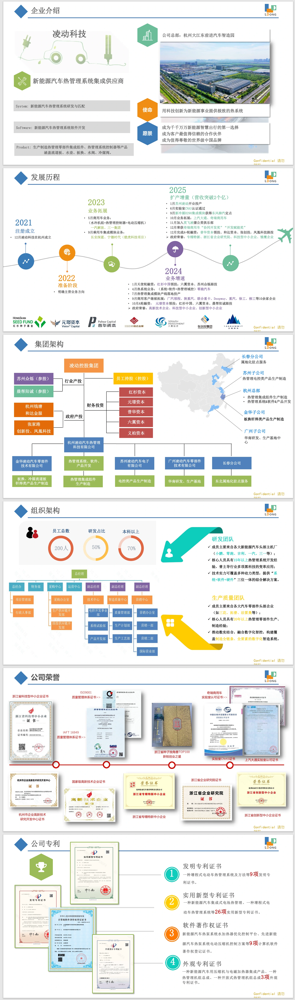
→

同一组内容，从分散的信息页，整理为“定位—业务—能力—布局—文化”的页面阅读顺序。
项目最初并不是一次完整的网站改版。
从 Banner、产品图片、企业信息等日常更新开始，随着 SEO 与持续维护需求加入，我逐渐开始重新检查网站里的内容、视觉、页面表达，以及这个老 CMS 真正允许我做到什么。

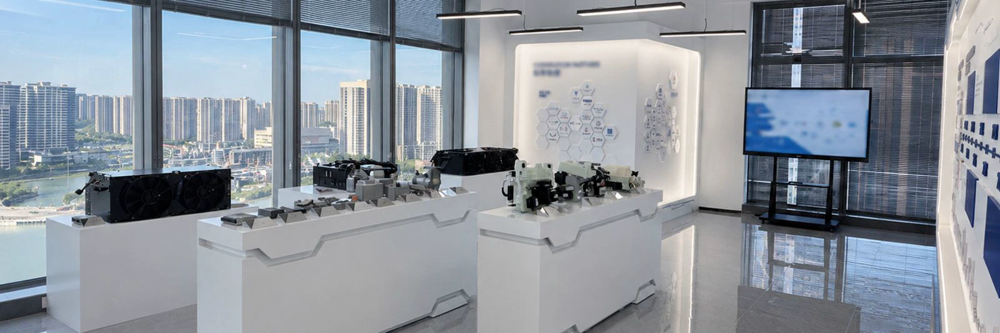

一开始，我处理的是“哪里旧了，就先更新哪里”。
项目最初来自日常官网维护：更新 Banner、产品视觉、系统图片、专利与企业信息，持续处理页面里的内容刷新。
很多早期修改来自日常反馈。随着维护持续进行，问题逐渐不再只是某一张图片。
SEO 和持续网站维护要求加入后，我开始逐页检查网站。内容、视觉、品牌、页面和系统限制逐渐汇集到同一张检查表里。
What started as maintenance
became a broader question of consistency.
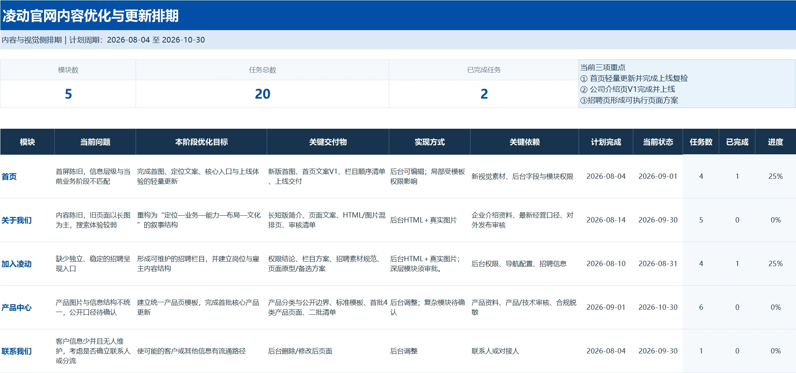
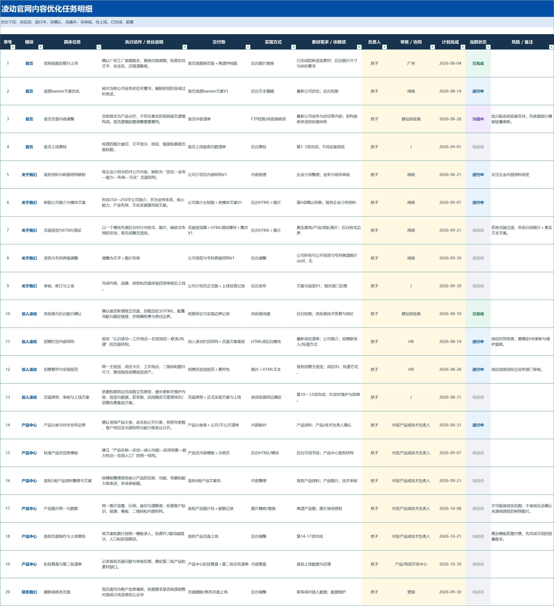
不是否定旧网站，而是在持续维护中发现：内容与品牌一致性需要被重新整理。
企业介绍 PPT 经历了多轮持续更新，从较早的多色几何、科技元素和汽车线稿，逐渐转向更清晰的内容结构、更统一的制造业表达、蓝白视觉与真实产品和制造场景。
这些内容逐渐成熟后，再反过来成为官网更新的重要基础。
The presentation became a place
where the brand language matured first.


官网并不是唯一的品牌内容载体。当企业介绍、产品、制造与研发内容逐渐成熟后，它们应该属于同一套品牌内容资产。
重新梳理企业简介、企业文化、发展历程、产品谱系、研发 / 制造 / 质量能力与企业文化活动，并在 CMS 能力范围内完成页面落地。

同一组内容，从分散的信息页，整理为“定位—业务—能力—布局—文化”的页面阅读顺序。
重新整理杭州、张家港、永康、广州岗位信息，推进招聘 Banner、岗位分组、JD 呈现与 HTML 页面实现，让招聘信息在既有 CMS 中更容易被阅读和使用。
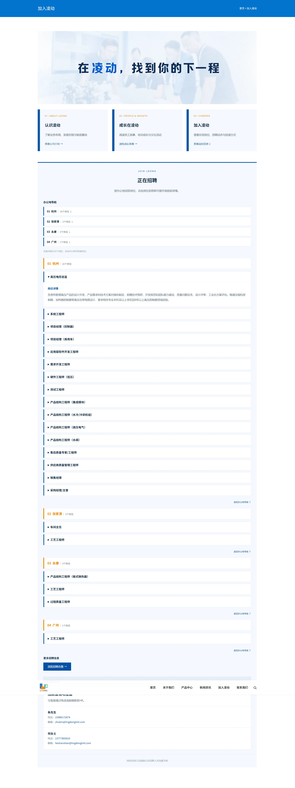
<table width="100%">
<tr>
<td class="career-section">
<p>01 / ABOUT LDONG</p>
<strong>认识凌动</strong>
<span>了解业务布局与制造基地</span>
</td>
</tr>
</table>在既有 CMS 里，把招聘信息从普通文本列表推进为更清晰的页面结构。
官网更新并不限于企业介绍页，也包括产品、系统能力、制造场景和首页视觉的持续整理。
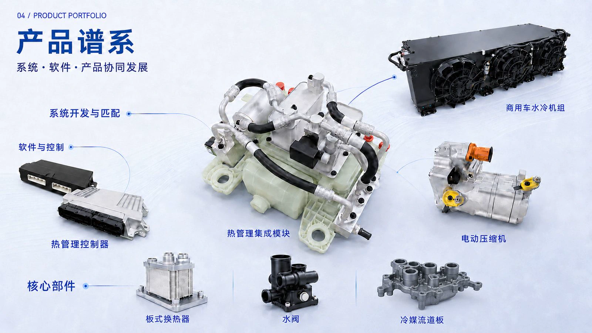
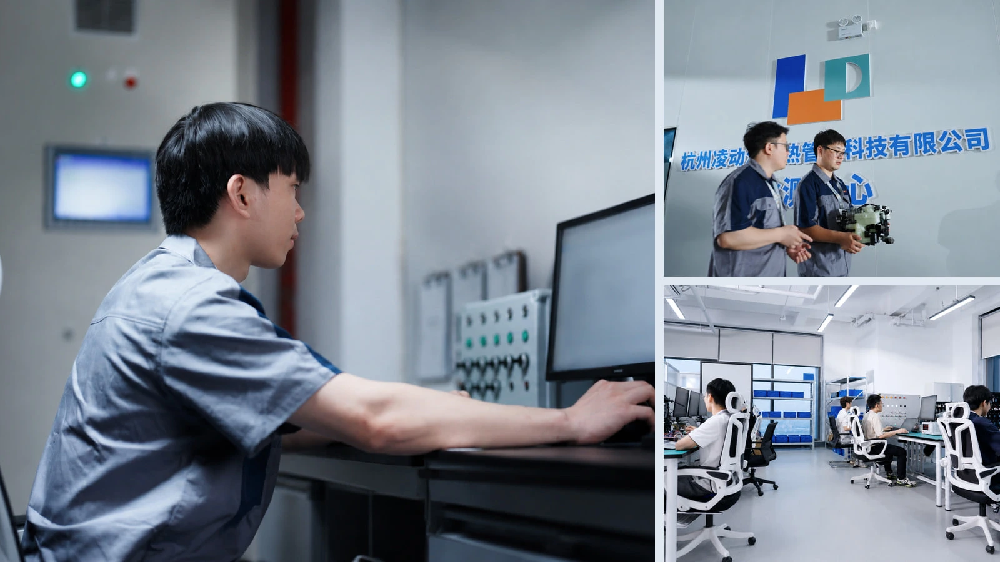
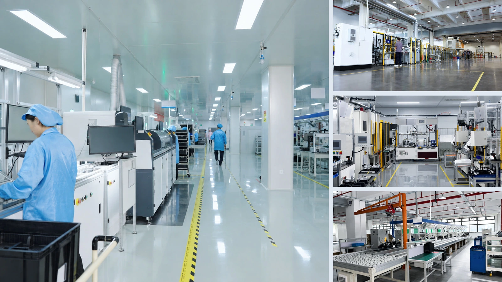
设计开始从“What do I want?”转向“What can this system reliably support?”
好的方案，也需要在真实系统里成立。
在限制中真正落地的部分
在现有网站架构和 CMS 能力范围内，完成重点内容与页面的持续更新。
企业介绍页、首页与 Banner、产品与系统视觉、加入凌动页面，以及相关内容结构和 HTML 实现探索。
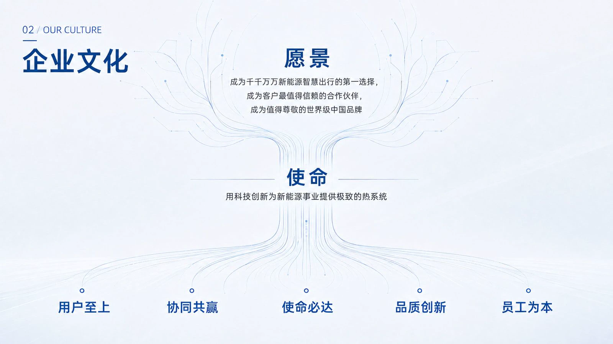
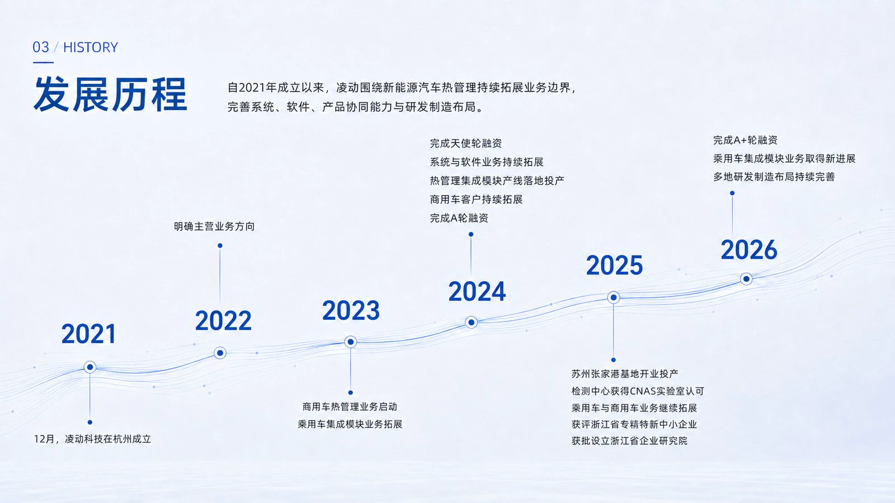
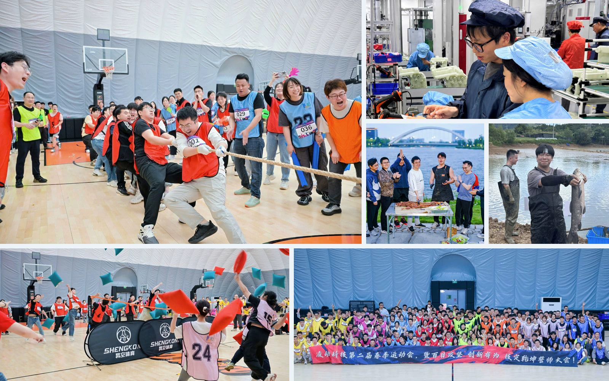
信息准确，细节经得起检查。
让访客快速理解公司、产品与能力。
视觉服务于表达，不让装饰抢走重点。
在持续处理制造业网站、企业介绍和产品内容的过程中，我逐渐形成了一个明确的判断：
真正能够建立信任的，往往是干净的制造环境、真实的设备、精密的产品、有秩序的信息，以及克制且一致的视觉表达。
Concept focuses on the key brand experience
rather than reproducing the full corporate website.
面向新能源汽车的热管理系统与核心部件
SYSTEM · SOFTWARE · PRODUCTS用真实工业摄影说明能力如何发生。
凌动百工志 · Life at LDONG · Join LDONG
这个项目让我从日常内容维护，逐渐进入页面、品牌内容和基础实现边界。
网站问题并不总能通过“换一张更漂亮的图片”解决。页面背后还有内容、品牌、信息组织、系统、权限和实现成本。
Design is not only about what should exist.
It is also about understanding what can actually be built.